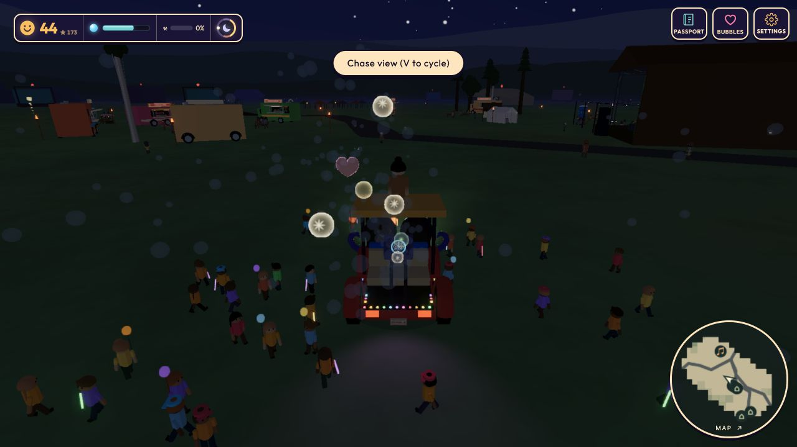
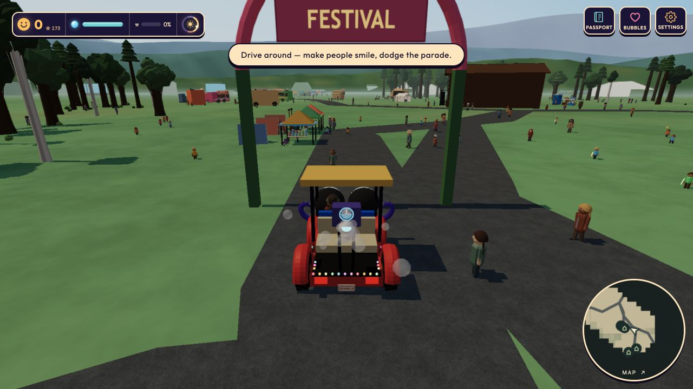
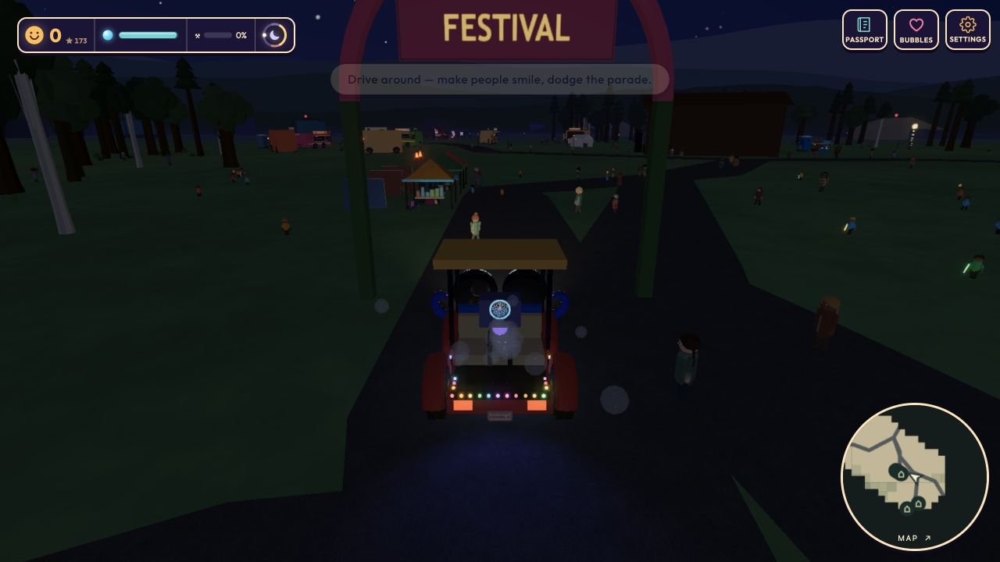
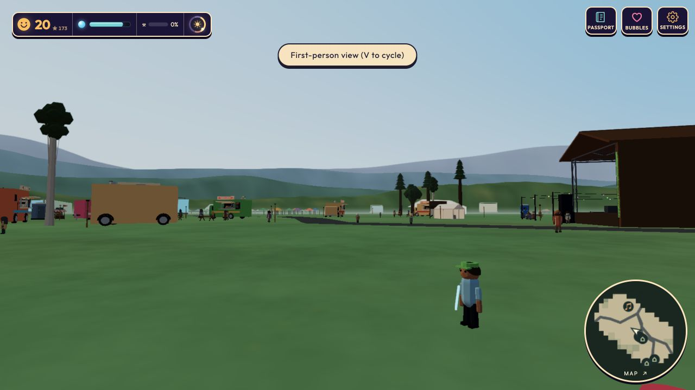
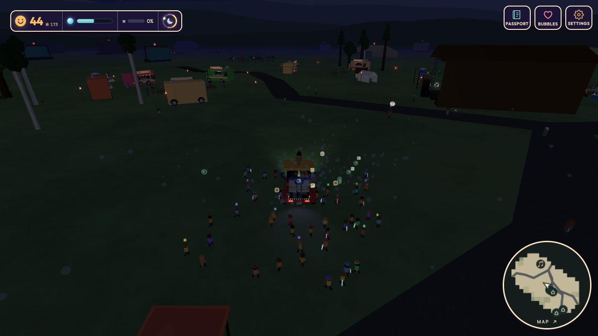
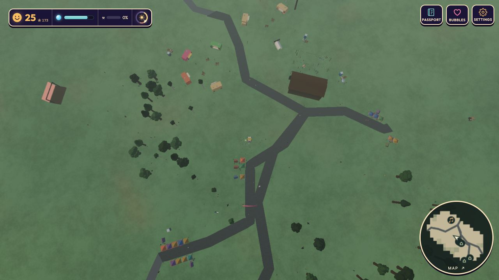
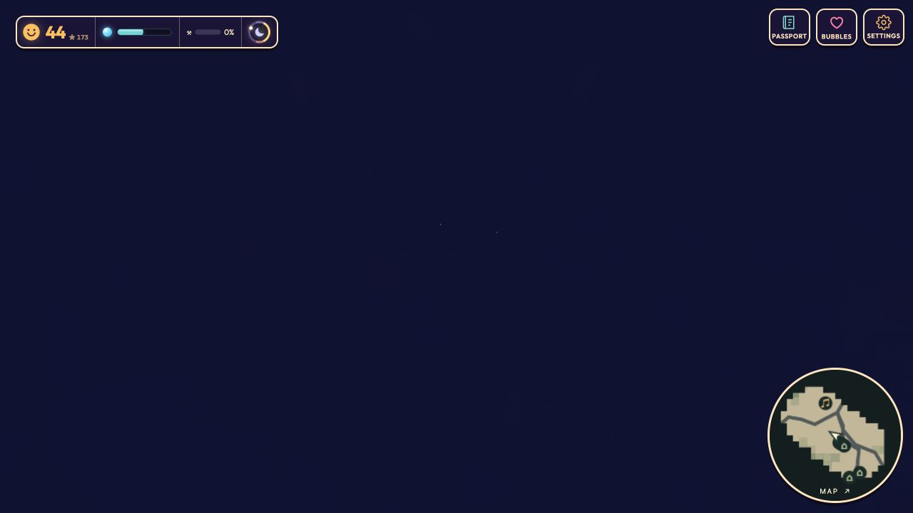
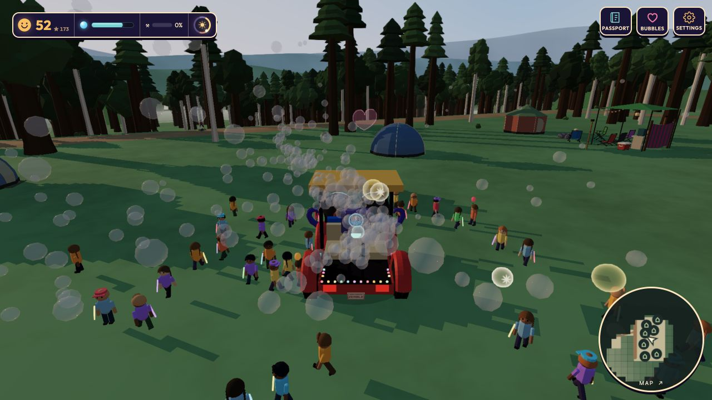
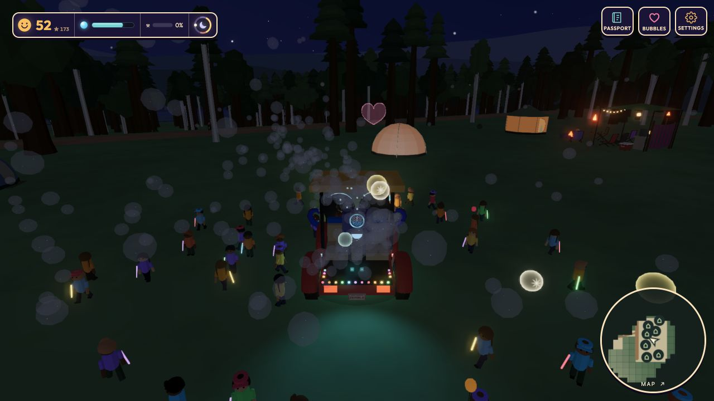
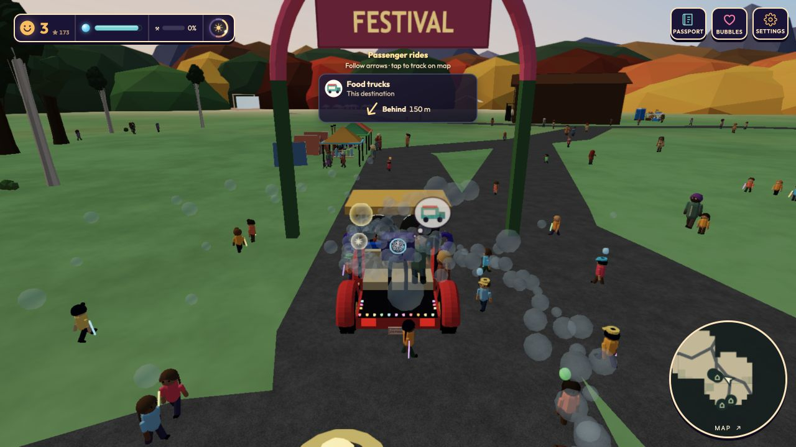
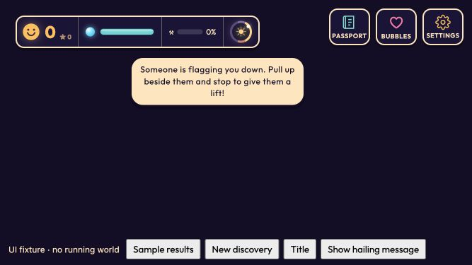
Current: Forested mountain canopy captures. The images below retain the initial color-only pass for comparison.
Actual running-game captures, November 16, 2026. Trees, people, time and camera positions vary between views. The far ridges remain scenery; reachable terrain is unchanged. Methods, budget and limits.










